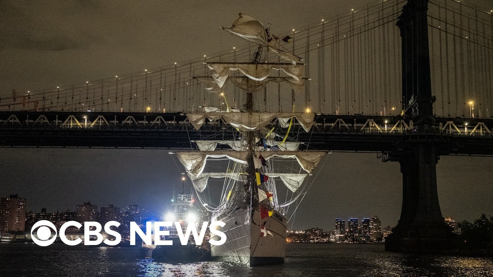

【布鲁克林大桥遭墨西哥海军训练船撞击，数人受伤】
Summary: A Mexican Navy training ship collided with the Brooklyn Bridge, injuring 19 people; the bridge remains open as first responders assist at the scene.
摘要： 一艘墨西哥海军训练船与布鲁克林大桥相撞，造成19人受伤；大桥仍开放通行，急救人员正在现场处置。

⏱️ Estimated Reading Time: 5 min
That collision happened around 9:00 tonight.
碰撞发生在今晚9点左右。
Information is still coming in at this hour, but here's what we know.
目前信息仍在更新，但以下是已知情况。
A Mexican Navy training ship was sailing on the East River when its mast collided with the Brooklyn Bridge.
一艘墨西哥海军训练船在东河航行时，其桅杆与布鲁克林大桥相撞。
The boat was packed with passengers at the time of the incident.
事发时船上载满乘客。
19 people are injured for seriously.
19人受伤，伤势严重。
The bridge is open to traffic.
大桥仍开放通行。
Addy Gardo is live near the scene at Pier 16 with the very latest.
Addy Gardo在16号码头现场为您带来最新报道。
Addie. Jenna. Truly a dramatic scene that unfolded before so many people's eyes out here on Pier 17.
Addie，Jenna，17号码头现场众人目睹了这戏剧性的一幕。
Take a look behind me.
请看我的身后。
That boat was completely lit up when it sailed away only to be now completely dim.
那艘船驶离时灯火通明，现在却一片漆黑。
There are no lights on the boat behind me.
我身后的船上没有灯光。
It is very far back there on the corner.
它远远停在角落。
This entire area is covered by first responders and personnel, fire trucks and ambulances.
整个区域布满急救人员、消防车和救护车。
Officials say multiple people were transported to the hospital.
官方称多人已被送往医院。
the extent of those injuries and the exact number of those people that were transported to the hospital.
伤者伤势程度及确切送医人数。
Right now, that information is unknown, but we do know that it was a Mexican Navy training vessel that crashed into the Brooklyn Bridge, and witnesses were here as this all unfolded.
目前信息尚不明确，但已知是一艘墨西哥海军训练船撞上布鲁克林大桥，目击者见证了全程。
Take a look at this very dramatic video right here.
请看这段震撼视频。
It shows the two boat mass snapping as the boat collides with the Brooklyn Bridge.
视频显示船撞上大桥时两根桅杆断裂。
Multiple flags, including the American flag, are on that boat and two large Mexican flag.
船上挂有多面旗帜，包括美国国旗和两面墨西哥大国旗。
In another video, you can see people scatter as the boat approaches the pier.
另一段视频中，船靠近码头时人群四散。
People I spoke with say that this this crash said people screaming, saying what they were they couldn't believe what they were actually seeing.
目击者称撞击引发尖叫，人们难以置信眼前景象。
It had all the yard arms covered with cadetses, I guess, from the boat that would putting on a show had climbed up the rigging and then spread out on all the mass, all three mass.
所有桁臂爬满学员，他们为表演攀上索具，分散在三根桅杆上。
It struck the mast, chopping it off maybe about 20 ft or maybe a little more down.
撞击使桅杆断裂约20英尺或更长。
And all of a sudden, we heard tons of screaming coming from this massive crowd that was masked here.
突然我们听到密集尖叫声从戴口罩的人群中传来。
And we all got up.
我们全都站了起来。
Our hearts were skipping a beat because it was just horrible how it sounded.
可怕的声音让我们心跳骤停。
We heard like this wood crunch which we then stood up from dinner right here and looked at the bridge and we saw what everybody's already seen happen which was just horrifying.
听到木头断裂声后，我们放下晚餐望向大桥，目睹了那骇人一幕。
Now we are learning that this vessel sails at the end of classes and the Mexican naval military school uh cadets training uh this year it left Mexico with 277 people on board.
据悉该船在课程结束后启航，今年载有墨西哥海军军校277名学员。
And Jenna, one thing that was very clear from speaking to people that were out here that witnessed this crash is that as they were recording, they said prior to that there were there was an entire show that went on on the boat.
Jenna，目击者表示撞击前船上正进行表演。
One of the videos that the witnesses showed me, as a matter of fact, it showed that there was people strapped onto the mass.
目击者提供的视频显示有人绑在桅杆上。
Right now, it's unclear if those people were actually unstrapped and and and came back down onto the boat before that crash happened.
目前不清楚这些人是否在撞击前解绑返回甲板。
So, we'll continue to follow this story very closely.
我们将持续跟进报道。
Obviously, a lot of people still shaken out here on the pier.
显然码头上的许多人仍惊魂未定。
I can't tell you several people came up to us showing us video and telling us they could hear the crunch as that boat crashed with that bridge.
多人向我们展示视频并描述船只撞桥时的碎裂声。
Jenna, so scary. Thank you for that update, Addie.
Jenna，太可怕了。感谢Addie的更新。
And of course, we'll stay on top of this breaking news out of the East River streaming on CBSN New York or online at cbsnew york.com.
我们将持续关注东河突发新闻，请通过CBSN纽约频道或cbsnewyork.com在线观看。